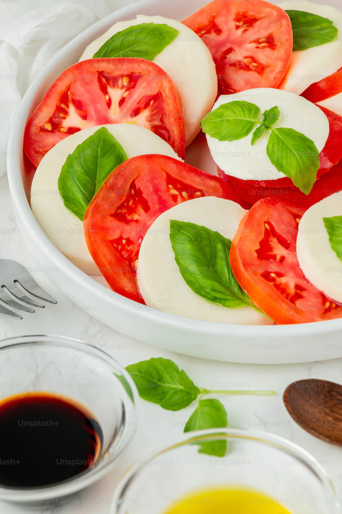

Caprese

Italian caprese salad is a summer classic!
Make it extra special with heirloom tomatoes, fresh basil, and fresh mozzarella. This is the BEST way to enjoy summer tomatoes.
Ingredients
- 1 1/2 to 2 pounds heirloom tomatoes, cored and sliced 1/4 to 1/3-inch thick (a serrated knife works best for slicing tomatoes)
- Sea salt
- 1 bunch fresh basil, leaves carefully chopped or torn as not to bruise
- 8 ounces fresh mozzarella cheese, sliced
- 1 tablespoon extra virgin olive oil
- Dash balsamic vinegar, optional
- Freshly ground black pepper
Method
Salt the tomatoes:
Sprinkle salt lightly over the tomato slices.Assemble the salad:
Assemble the salad by arranging alternating slices of tomatoes, basil leaves, and mozzarella slices.Dress the salad:
Drizzle extra virgin olive oil over the salad. Add a dash of balsamic vinegar, if using. Sprinkle lightly with pepper.
Back